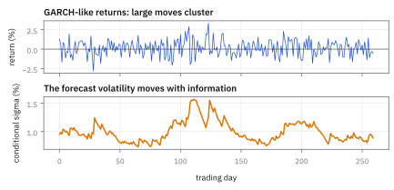
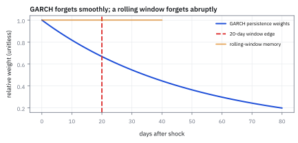
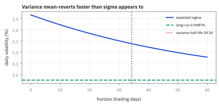

16.4 Autoregressive Conditional Heteroskedasticity (ARCH) and Generalized ARCH (GARCH) Volatility Forecasting
GARCH ให้ variance ของพรุ่งนี้จำข่าวกำลังสองของวันนี้และ variance เดิม ความผันผวนจึงพุ่งหลังวันตลาดแรงแล้วค่อย ๆ กลับสู่ระดับปกติ และใช้กำหนดขนาดพอร์ตได้ทุกวัน
พอร์ตหุ้น \$100 ล้านใช้ GARCH(1,1) ที่ $\omega=1.8\times10^{-6}$, $\alpha=0.09$, $\beta=0.89$ เมื่อวานตลาดร่วง 4% ทั้งที่แบบจำลองคาดความผันผวนของเมื่อวานไว้แค่ 1% คนหนึ่งบอกว่า “ใช้ 1% ต่อไป วันเดียวไม่เปลี่ยนโลก” อีกคนบอกว่า “ใช้ 4% เพราะนั่นคือสิ่งที่เพิ่งเกิด” ความผันผวนของวันนี้ควรเป็นเท่าไร และต้องขายเท่าไรให้ 1-day 99% VaR ไม่เกิน \$3 ล้าน?
ลองตอบก่อนเปิดเฉลย
ไม่ใช่ทั้งสองค่า ความผันผวนวันนี้คือ 1.532% ต่อวัน อยู่ระหว่างกลางแต่ใกล้ของเดิมกว่า VaR ขึ้นจาก \$2.33 ล้านเป็น \$3.56 ล้าน จึงต้องลดพอร์ตเหลือ \$84.16 ล้าน คือขาย \$15.84 ล้าน เส้นพยากรณ์ variance จากข้อมูลวันนี้มีส่วนเกินหดครึ่งทุก 34.3 วันทำการ และรองรับพอร์ตเต็มขนาดได้ในวันที่ 32 แต่เมื่อมีข้อมูลใหม่ต้องคำนวณใหม่ทุกวัน ไม่ใช่นัดซื้อคืนล่วงหน้า
ภาพรวมก่อนลงสูตร
หน้า ACF พบว่าผลตอบแทนรายวันแทบไม่จำทิศ แต่จำขนาดได้นาน: วันแรงมักตามด้วยวันแรง ถ้าขนาดของเมื่อวานบอกขนาดของวันนี้ได้ ความผันผวนก็ไม่ใช่ค่าคงที่ตัวเดียวแบบในgeometric Brownian motion แต่เป็นสถานะที่ขยับทุกวันตามข่าว แบบจำลองตระกูล ARCH/GARCH เขียนกฎการขยับนั้นเป็นสมการ: variance ของพรุ่งนี้ = พื้น + ส่วนหนึ่งของข่าวกำลังสองวันนี้ + ส่วนหนึ่งของ variance วันนี้
รูปด้านล่างเทียบสามวิธีประมาณความผันผวนในสถานการณ์เดียวกัน: เมื่อวานร่วง 4% แล้วตลาดสงบลง ทุกวันต่อมาขยับ 1% พอดี GARCH กระโดดขึ้นมากที่สุดแล้วลดลงเรียบ ๆ เข้าหาระดับปกติ EWMA แบบ RiskMetrics กระโดดน้อยกว่าและลดช้ากว่า ส่วนค่าเฉลี่ย 20 วันย้อนหลังค้างอยู่ระดับเดิม 20 วันแล้วตกหน้าผาทันทีที่วันร่วงหลุดหน้าต่าง ซึ่งไม่มีเหตุผลทางเศรษฐกิจรองรับเลย
หน้านี้เริ่มจาก ARCH ที่ง่ายที่สุด เติมความจำเป็น GARCH กางสมการให้เห็นว่ามันคือค่าเฉลี่ยถ่วงของข่าวกำลังสองย้อนหลังบวกพื้น หาระดับปกติ คำนวณความผันผวนวันนี้และเส้นพยากรณ์ แปลงเป็น VaR และขนาดพอร์ต แล้วดูว่า GARCH คือ ARMA ของข่าวกำลังสอง สร้างหางหนาได้เอง แยกข่าวดีข่าวร้ายได้อย่างไร และประมาณ parameter จากข้อมูลอย่างไร
รูป — หลังวันร่วง 4%: GARCH, EWMA และค่าเฉลี่ย 20 วัน
ศัพท์ที่ใช้ในหัวข้อนี้
- Conditional variance
- variance ของผลตอบแทนพรุ่งนี้เมื่อรู้ข้อมูลถึงวันนี้แล้ว ต่างจาก variance เฉลี่ยทุกวัน ใช้กำหนดว่าวันนี้ควรถือความเสี่ยงได้เท่าไร
- ARCH
- autoregressive conditional heteroskedasticity: แบบจำลองที่ variance ของวันนี้ขึ้นกับข่าวกำลังสองของวันก่อน ๆ จำนวนจำกัด ใช้จับว่าวันแรงมักตามด้วยวันแรง
- GARCH
- generalized ARCH: ARCH ที่เพิ่ม variance ของเมื่อวานเข้าไปในสมการ ความจำจึงยาวโดยใช้ parameter แค่สามตัว เป็นแบบจำลองความผันผวนรายวันที่ใช้กันแพร่หลายที่สุด
- EWMA
- ค่าเฉลี่ยถ่วงแบบเรขาคณิตของข่าวกำลังสอง $\sigma_t^2=(1-\lambda)\epsilon_{t-1}^2+\lambda\sigma_{t-1}^2$ คือ GARCH ที่ไม่มีพื้นและไม่มีระดับปกติ ใช้ในระบบความเสี่ยงเชิงพาณิชย์เพราะมี parameter ตัวเดียว
- Persistence
- ค่า $\alpha+\beta$ คือสัดส่วนของ variance ส่วนเกินที่ยกยอดไปวันถัดไปในเส้นพยากรณ์ ใช้หา half-life ของช่วงปั่นป่วน
- Value at Risk (VaR)
- ขาดทุนหนึ่งวันที่แบบจำลองคาดว่าจะเกินได้แค่ 1% ของวัน ใช้เป็นเพดานความเสี่ยงของโต๊ะ ไม่ใช่เพดานขาดทุน นิยามเต็มอยู่ในหน้า VaR และ expected shortfall
- Leverage effect
- การที่วันลบดันความผันผวนของหุ้นมากกว่าวันบวกขนาดเท่ากัน GARCH แบบปกติมองไม่เห็นเพราะใช้ข่าวกำลังสอง รุ่นอย่าง GJR-GARCH แยกสองฝั่งออกจากกัน
- Kurtosis
- ค่าเฉลี่ยของระยะห่างจากค่าเฉลี่ยยกกำลังสี่ หารด้วย variance ยกกำลังสอง ให้น้ำหนักกับค่าที่อยู่ไกลมาก ๆ Normal มีค่า 3 ค่าที่สูงกว่าบอกว่าหางหนากว่า
สัญลักษณ์และหน่วย
| สัญลักษณ์ | ความหมาย | หน่วย |
|---|---|---|
| $r_t,\ \epsilon_t$ | ผลตอบแทนของวัน $t$ และข่าวหลังหักค่าเฉลี่ย (โจทย์ถือค่าเฉลี่ยเป็นศูนย์) | ทศนิยมต่อวัน |
| $z_t$ | ก้อนสุ่ม Normal มาตรฐานของวัน $t$ | ไม่มีหน่วย |
| $\sigma_t^2,\ \sigma_t$ | variance และความผันผวนของวัน $t$ เมื่อรู้ข้อมูลถึงวันก่อน | ทศนิยม² และทศนิยมต่อวัน |
| $\omega,\ \alpha,\ \beta$ | พื้นของ variance, น้ำหนักของข่าวกำลังสอง, น้ำหนักของ variance เมื่อวาน | ทศนิยม², ไม่มีหน่วย, ไม่มีหน่วย |
| $V$ | variance ระยะยาวที่แบบจำลองกลับไปหา | ทศนิยม² |
| $f_h$ | variance ที่พยากรณ์ไว้สำหรับ $h$ วันหลังวันนี้ | ทศนิยม² |
| $A,\ L,\ z_{0.99}$ | มูลค่าพอร์ต, เพดาน VaR และ quantile 99% ของ Normal | ดอลลาร์, ดอลลาร์, ไม่มีหน่วย |
ขั้นที่ 1 — จาก “วันแรงตามด้วยวันแรง” สู่สมการของ variance: ARCH(1)
ถ้าขนาดของเมื่อวานบอกขนาดของวันนี้ได้ ทางตรงที่สุดคือเขียน variance ของวันนี้เป็นฟังก์ชันของข่าวกำลังสองของเมื่อวาน บรรทัดแรกคือนิยามของผลตอบแทน: ข่าวคือความผันผวนของวันนั้นคูณก้อนสุ่มมาตรฐานที่อิสระกันทุกวัน บรรทัดที่สองคือนิยามของ ARCH(1) ลองใส่ $\omega=8.19\times10^{-5}$ ซึ่งเลือกให้ระดับปกติเท่ากับแบบจำลองหลักของหน้านี้ และ $\alpha=0.09$ เท่ากัน
ARCH(1) ตอบสนองต่อวันร่วงทันที ความผันผวนขึ้นจาก 1% เป็น 1.503% แต่บรรทัดสุดท้ายคือปัญหา: ถ้าวันนี้เงียบสนิท พรุ่งนี้ variance กลับไปที่ $\omega$ ทันที ความผันผวน 0.905% ต่ำกว่าระดับปกติด้วยซ้ำ วันร่วงเมื่อวานซืนถูกลืมหมดภายในวันเดียว
นี่เป็นกรณีเฉพาะที่วันถัดมาไม่มีข่าวเลย ถ้าวันถัดมายังขยับมาก ข่าวกำลังสองก็ส่งผลต่อกันเป็นทอด ๆ ได้ แต่ที่ $\alpha=0.09$ เส้นพยากรณ์กลับเร็วมาก ARCH แก้ด้วยการใส่ข่าวกำลังสองย้อนหลังหลายวัน แต่ต้องประมาณน้ำหนักทีละวัน ทางที่ประหยัดกว่าคือเก็บความจำไว้ในตัวแปรเดียว: variance ของเมื่อวานเอง
ขั้นที่ 2 — GARCH(1,1) และเงื่อนไขที่ทำให้มันใช้ได้
เติม $\beta\sigma_{t-1}^2$ เข้าไป variance ของเมื่อวานเก็บสรุปของข่าวทุกวันก่อนหน้าอยู่แล้ว ความคิดหลักคือทำให้ parameter ของการแจกแจง (ความผันผวน) กลายเป็นสถานะที่เดินตามเวลา สมการนี้เป็นนิยามของแบบจำลองที่เราเลือกใช้ ตามด้วยเงื่อนไข: variance เป็นบวก และมี variance ระยะยาวที่จำกัด
$\omega$ คือพื้นที่บวกทุกวัน อีกสองก้อนใช้ข่าวกำลังสองล่าสุดและ variance เดิม เมื่อสองก้อนนี้ไม่ติดลบ variance ใหม่จึงไม่ต่ำกว่า $\omega$ ข่าวกำลังสองที่ใหญ่ดัน variance ขึ้น ทำให้วันถัดไปมีโอกาสขยับแรงขึ้นอีก แต่การขึ้นไม่ไปไม่หยุด เพราะก้อน $\beta\sigma_{t-1}^2$ หดส่วนเกินลงทุกวัน
$\alpha+\beta=0.98$ ทำให้ส่วนเกินของ variance บนเส้นพยากรณ์ลด 2% ต่อวัน ไม่ได้แปลว่าความผันผวนจริงต้องลดทุกวัน ถ้า $\alpha+\beta\ge1$ จะไม่มี variance ระยะยาวที่มีค่าจำกัด เหตุผลเดียวกับที่ AR(1) ต้องมี $|\phi|\lt1$
รูป — ผลตอบแทนจำลองจาก GARCH(1,1): วันแรงเกาะกลุ่มกัน

ขั้นที่ 3 — กางสมการ: GARCH คือ EWMA ของข่าวกำลังสองที่มีพื้น
สมการของ GARCH กดเครื่องคิดเลขได้ แต่ยังไม่บอกว่ามันให้น้ำหนักอดีตอย่างไร แทนสมการของเมื่อวานลงไปแทน $\sigma_{t-1}^2$ แบบเดียวกับที่กางสมการ AR(1)
แทนรอบเดียวก็เห็นรูป: variance เมื่อวานหายไป แทนที่ด้วยข่าวกำลังสองของเมื่อวานซืนคูณ $\beta$ ทำซ้ำไปเรื่อย ๆ ทุกวันในอดีตโผล่มาครบ และก้อน $\omega$ สะสมเป็น $\omega/(1-\beta)$ แบบเดียวกับ $c/(1-\phi)$ ของ AR(1) ข่าวเมื่อวานได้น้ำหนัก 0.09 ข่าวเมื่อสี่วันก่อนเหลือ 0.0634 น้ำหนักหดครึ่งทุก 5.95 วัน และไม่มีวันไหนหลุดออกทันที
เทียบกับ EWMA ที่ระบบความเสี่ยงเชิงพาณิชย์นิยมใช้ (RiskMetrics ใช้ $\lambda=0.94$ กับข้อมูลรายวัน):
สองสมการเหมือนกันทุกอย่าง ยกเว้นพื้น $\omega/(1-\beta)$ ที่ GARCH มีแต่ EWMA ไม่มี EWMA จึงเป็น GARCH ที่ $\omega=0$ และ $\alpha+\beta=1$ พอดี ข้อดีคือมี parameter ตัวเดียวที่ใช้ร่วมกันได้ทุกสินทรัพย์ อธิบายลูกค้าง่าย และไม่ต้องประมาณสามตัวต่อหุ้นหนึ่งตัว ข้อเสียคือไม่มีระดับปกติ คำพยากรณ์หลายวันจึงเป็นเส้นตรงแนวนอน ไม่ได้ค่อย ๆ กลับสู่ระดับปกติแบบ GARCH
ระวังสองตัวเลขของ GARCH: $\beta=0.89$ คืออัตราที่ข่าวเก่าจางในค่าของวันนี้ ส่วน $\alpha+\beta=0.98$ คืออัตราที่คำพยากรณ์กลับสู่ปกติด้านล่าง ซึ่งช้ากว่า เพราะวันข้างหน้าก็คาดว่าจะมีข่าวใหม่ขนาดเท่ากับ variance ที่สูงอยู่ ในรูปแรกของหน้า วันต่อ ๆ ไปขยับแค่ 1% จริง เส้น GARCH จึงลดเร็วตาม $\beta$
รูป — น้ำหนักของข่าวเก่า: GARCH เทียบกับหน้าต่าง 20 วัน

ขั้นที่ 4 — ระดับปกติที่ variance กลับไปหา
ถ้าปล่อยไว้นาน variance เฉลี่ยจะนิ่งที่ค่าหนึ่ง ใช้กลวิธีเดียวกับค่าเฉลี่ยระยะยาวของ AR(1): หาค่าเฉลี่ยทั้งสองข้าง แล้วตั้งให้ค่าเฉลี่ยของสองวันเท่ากัน ก้อนที่ต้องคิดก่อนคือค่าเฉลี่ยของข่าวกำลังสอง
บรรทัดแรกแยกค่าเฉลี่ยของผลคูณได้ เพราะ $\sigma_t$ ถูกกำหนดจากข้อมูลถึงเมื่อวานแล้ว ส่วน $z_t$ เป็นของใหม่ที่อิสระจากมัน และ $\mathbb E[z_t^2]=1$ ตัวส่วน 0.02 ขยาย $\omega$ ขึ้น 50 เท่า $\omega$ จึงไม่ใช่ระดับปกติ เหมือนที่ $c$ ไม่ใช่ค่าเฉลี่ยของ AR(1)
แปลงเป็นรายปีด้วย $\sqrt{252}$ เพราะ variance ของข่าวที่ไม่มี autocorrelation บวกกันตามจำนวนวัน (252 วันทำการคือ 365 วันลบเสาร์อาทิตย์ 104 วันและวันหยุดตลาดราว 9 วัน) ส่วน SD โตตามราก คนที่คูณ 0.9487% ด้วย 252 ตรง ๆ จะได้ 239% ต่อปี ซึ่งผิดไป 15.9 เท่า
ขั้นที่ 5 — ความผันผวนของวันนี้หลังวันร่วง 4%
โจทย์ให้อะไรมาบ้าง: ข่าวเมื่อวาน $\epsilon_{t-1}=-0.04$ จึงได้ $\epsilon_{t-1}^2=0.0016$ ความผันผวนที่คาดไว้สำหรับเมื่อวาน 1% จึงได้ $\sigma_{t-1}^2=0.0001$ ทุกตัวเป็นทศนิยม ไม่ใช่ % และโจทย์ถือค่าเฉลี่ยผลตอบแทนเป็นศูนย์ −4% จึงเป็นข่าวทั้งก้อน ใส่เข้าสมการ GARCH ทีละก้อน
คำตอบ: 1.532% ต่อวัน ผลบวกสามก้อนยังเป็น variance ต้องถอดรากก่อนจึงได้ความผันผวน ก้อนของข่าวได้ $0.000144/0.0002348=61.3\%$ ของ variance ก้อนความจำ 37.9% และพื้น $\omega$ แค่ 0.8% ข่าวเมื่อวานครองคำพยากรณ์ แต่ความผันผวนขึ้นแค่ 53% ทั้งที่ข่าวใหญ่กว่าที่คาดสี่เท่า เพราะแบบจำลองให้น้ำหนักข่าววันเดียวแค่ 9%: ตอบสนองแต่ไม่ตื่นตระหนก
เทียบกับหน้าต่าง 20 วันที่ให้น้ำหนักเท่ากัน: สมมติ 19 วันก่อนหน้าแกว่งวันละ 1% พอดี ค่าเฉลี่ยคือ $(19\times0.0001+0.0016)/20=0.000175$ ได้ 1.323% และถ้าวันต่อ ๆ ไปแกว่ง 1% ตัวเลขนี้จะค้างที่ 1.323% จนวันร่วงหลุดหน้าต่าง แล้วตกเป็น 1.000% ทันทีตามเส้นส้มในรูปแรก ความเสี่ยงไม่ได้หายเพราะปฏิทินเดินผ่าน
ตรวจเองใน 10 วินาที: $0.0000018+0.000144+0.000089=0.0002348$ และ $1.5323^2\approx2.348$
รูป — variance ของวันนี้มาจากสามก้อน
ขั้นที่ 6 — พยากรณ์หลายวัน และ half-life ของช่วงปั่นป่วน
พรุ่งนี้ต้องใช้ข่าวของวันนี้ ซึ่งยังไม่เกิด เราไม่รู้ว่าจะขึ้นหรือลง แต่รู้ว่าค่าเฉลี่ยของข่าวกำลังสองคือ variance ที่พยากรณ์ไว้ แทนเข้าไปแล้ว $\alpha$ กับ $\beta$ ยุบรวมเป็นตัวเดียว ตัวเลขข้างล่างเขียนในหน่วย $10^{-6}$ ให้อ่านง่าย 0.0002348 จึงเป็น 234.8
บรรทัดที่สองใช้ $\mathbb E_{t-1}[\epsilon_{t+h}^2]=f_h$ ด้วยเหตุผลเดียวกับระดับปกติ บวกกับ tower property (ค่าคาดของค่าคาดที่ละเอียดกว่าคือค่าคาดเดิม) ลบสมการระดับปกติ $V=\omega+0.98V$ ออก ก็ได้ส่วนเกินที่หด 2% ต่อวัน ซึ่งคือรูประยะห่างของ AR(1) ทุกประการ ส่วนเกินวันนี้ $144.8\times10^{-6}$ จึงหดครึ่งใน 34.3 วันทำการ
| $h$ (วัน) | $0.98^h$ | $f_h$ ($10^{-6}$) | $\sqrt{f_h}$ ต่อวัน |
|---|---|---|---|
| 1 | 0.9800 | 231.90 | 1.523% |
| 2 | 0.9604 | 229.07 | 1.513% |
| 5 | 0.9039 | 220.89 | 1.486% |
| 20 | 0.6676 | 186.67 | 1.366% |
| 60 | 0.2976 | 133.09 | 1.154% |
| ไกลมาก | 0 | 90.00 | 0.949% |
ทุกแถวคือ $f_h=90+0.98^h(144.8)$ ในหน่วย $10^{-6}$ คอลัมน์สุดท้ายถอดรากของ variance คาด ที่ระยะ 60 วันค่าพยากรณ์ยังเป็น 1.154% สูงกว่าระดับปกติ 22% ส่วนเกินของ $\sigma$ เองหดครึ่งช้ากว่าของ variance: $\sigma$ จะลงถึงครึ่งทางระหว่าง 1.532% กับ 0.949% คือ 1.2405% ในวันที่ 40.5 ไม่ใช่ 34.3 เพราะการถอดรากทำให้การลดของ variance ดูอ่อนลง
ความเสี่ยงหลายวันต้องบวก variance ของแต่ละวันที่พยากรณ์ไว้ ไม่ใช่คูณรากของเวลากับค่าวันนี้ ข่าวแต่ละวันไม่มี autocorrelation variance จึงบวกกันได้ตรง ๆ
ผลรวม 10 ก้อนแยกเป็นสองส่วน: ระดับปกติ 10 วัน บวกส่วนเกินที่หดแบบเรขาคณิต ซึ่งรวมได้ด้วยสูตรอนุกรมเรขาคณิต การคูณรากของ 10 กับค่าวันนี้สูงไปเพราะลืมว่าความผันผวนกำลังลดลง การใช้ระดับปกติต่ำไปมากเพราะลืมว่าวันนี้ยังปั่นป่วน
รูป — ความผันผวนที่พยากรณ์ไปถึง 60 วัน

รูป — SD ของผลรวม 10 วัน สามวิธีคิด
ขั้นที่ 7 — แปลงความผันผวนเป็น VaR และขนาดพอร์ต
โจทย์ให้อะไรมาบ้าง: พอร์ต $A=\$100$ ล้าน เพดาน $L=\$3$ ล้าน สมมติผลตอบแทนวันนี้เป็น Normal ที่ SD $\sigma_t$ ตามแบบจำลอง quantile 99% ของ Normal มาตรฐานคือ $z_{0.99}=2.326348$ ส่วน quantile 1% เป็นค่าติดลบขนาดเดียวกัน VaR คือขาดทุนที่ quantile 1% ของ P&L
คำตอบ: VaR ขึ้นจาก \$2.33 ล้านเป็น \$3.56 ล้าน เกินเพดาน 19% จึงต้องลดพอร์ตเหลือ \$84.16 ล้าน คือขาย \$15.84 ล้านเช้านี้ พอร์ตเต็ม \$100 ล้านรับความผันผวนได้สูงสุด 1.2896% ต่อวัน หรือ variance $1.2896\%^2=166.30\times10^{-6}$ เส้นพยากรณ์ลงมาถึงในวันที่ 32 แต่ต้องตรวจด้วยข่าวจริงทุกวัน ไม่ใช่วันซื้อคืนที่แน่นอน
ตรวจเองใน 10 วินาที: VaR เป็นเส้นตรงใน $\sigma$ อัตราส่วน $3.5647/2.3263=1.532$ เท่ากับอัตราส่วนของความผันผวนพอดี และ $100/1.532\times(3/2.326)\approx84.2$ ล้าน
รูป — ขนาดพอร์ตที่รับได้ตามเส้นพยากรณ์
ขั้นที่ 8 — GARCH คือ ARMA(1,1) ของข่าวกำลังสอง
เส้นพยากรณ์ดูเหมือน AR(1) มาก ขั้นนี้แสดงว่าไม่ใช่เรื่องบังเอิญ ตั้ง $v_t$ เป็นส่วนที่ข่าวกำลังสองจริงต่างจาก variance ที่คาดไว้ ค่าเฉลี่ยของมันเมื่อรู้อดีตเป็นศูนย์ เพราะ $\mathbb E[z_t^2]=1$ แล้วแทน $\sigma^2=\epsilon^2-v$ ลงในสมการ GARCH
สมการของ $\epsilon_t^2$ คือ ARMA(1,1) โดยมีข่าวกำลังสองเป็นอนุกรม $\phi=\alpha+\beta$ และ $\theta=-\beta$ ค่าเฉลี่ยระยะยาวของมันคือ $\omega/(1-0.98)=V$ แบบ $c/(1-\phi)$ และใช้สูตร ACF ของ ARMA(1,1) ได้ตรง ๆ เพราะ $v_t$ ไม่มี correlation ข้ามวัน แม้ขนาดของมันจะขึ้นกับ $\sigma_t$ ก็ตาม เขียนเป็น parameter ของ GARCH ได้ $\rho_1=\alpha(1-\alpha\beta-\beta^2)/(1-2\alpha\beta-\beta^2)$
lag 1 ถูกดึงลงเหลือ 0.24 ด้วยก้อน MA ที่ติดลบ แล้วจางช้ามากด้วยอัตรา 0.98 ยังเหลือ 0.16 ที่ lag 20 นี่คือ volatility clustering ที่วัดได้ใน ACF AR(1) ธรรมดาทำแบบนี้ไม่ได้ สูตรนี้ต้องการให้กำลังสี่ของข่าวมีค่าเฉลี่ยจำกัด ซึ่งขั้นถัดไปตรวจ ข้อควรรู้จากข้อมูลจริง: เมื่อฟิต GARCH(1,1) กับดัชนีหุ้น ACF ของกำลังสองที่แบบจำลองทำนาย (เมื่อบังคับให้ kurtosis ตรงกับข้อมูล) มักสูงกว่าที่วัดได้ และความจำของมันยาวเกินไปเล็กน้อย GARCH จับ stylized facts ได้หลายข้อ แต่ไม่ครบทุกข้อ
รูป — ACF ของข่าวกำลังสองภายใต้ GARCH นี้
ขั้นที่ 9 — หางอ้วนที่ GARCH สร้างขึ้นเอง
$z_t$ เป็น Normal ทุกวัน แต่ผลตอบแทนที่มองรวมทั้งปีไม่ใช่ เพราะมันคือส่วนผสมของ Normal หลายตัวที่กว้างไม่เท่ากัน ลองตัวอย่างเล็กก่อน: ครึ่งหนึ่งของวันมี $\sigma=1$ อีกครึ่งมี $\sigma=2$ variance รวมคือค่าเฉลี่ยของ variance แต่ละกลุ่มตามlaw of total variance (ค่าเฉลี่ยทุกกลุ่มเป็นศูนย์) และใช้ $\mathbb E[z^4]=3$ ของ Normal มาตรฐานซึ่งหาได้จากmoment generating function
GARCH ทำแบบเดียวกันแต่ $\sigma_t$ เปลี่ยนต่อเนื่อง เขียน $\sigma_t^2=\omega+(\alpha z_{t-1}^2+\beta)\sigma_{t-1}^2$ ยกกำลังสองแล้วหาค่าเฉลี่ย ใช้ stationarity บังคับให้ $\mathbb E[\sigma^4]$ ของสองวันเท่ากัน แล้วแทน $\omega=V(1-p)$ โดย $p=\alpha+\beta$
บรรทัด $\mathbb E[\sigma^4]$ ได้จากการกางกำลังสองของ $\omega+(\alpha z^2+\beta)\sigma^2$ แล้วใช้ว่า $z_{t-1}$ อิสระจาก $\sigma_{t-1}$ ส่วนบรรทัด $K$ ใช้ $\mathbb E[\epsilon^4]=\mathbb E[\sigma^4]\,\mathbb E[z^4]=3\mathbb E[\sigma^4]$ เงื่อนไขที่ต้องระวังคือ $c_4\lt1$ มิฉะนั้น $\mathbb E[\sigma^4]$ ไม่มีค่าจำกัดและ kurtosis เป็นอนันต์ ตัวอย่างนี้ได้ $c_4=0.9766$ จึงใช้สูตรได้ และได้ kurtosis 5.08 จาก $z_t$ ที่เป็น Normal แท้ ทุกค่าที่ $\alpha\gt0$ ให้ kurtosis มากกว่า 3 เสมอ
ข้อมูลจริงหางหนากว่านี้อีก: ผลตอบแทนรายวันของ SPY ปี 2001–2017 มี kurtosis ราว 11.4 และเมื่อหารผลตอบแทนด้วย $\sigma_t$ จาก GARCH(1,1) แล้ว ระยะห่างจาก Normal (สถิติ Kolmogorov–Smirnov) ลดจาก 0.098 เหลือ 0.040 GARCH อธิบายหางหนาได้ส่วนใหญ่ แต่ไม่หมด
ใช้กับวันร่วงจริง: ถ้า $\sigma$ คงที่ 1% วัน −4% คือเหตุการณ์ −4 SD ซึ่ง Normal ให้โอกาส $3.17\times10^{-5}$ หรือเวลารอเฉลี่ยราว 125 ปีภายใต้สมมติฐานอิสระ แต่ถ้าวันถัดไปร่วง −4% อีก หลังจากพยากรณ์ $\sigma_t=1.532\%$ ไว้แล้ว วันใหม่นั้นเป็นแค่ −2.61 SD ไม้บรรทัดที่ถูกคือ $\sigma_t$ ที่พยากรณ์ก่อนวันนั้น ไม่ใช่ค่าที่อัปเดตหลังเห็นข่าว Black Monday 19 ตุลาคม 1987 ที่ GBM มองเป็น −18.2 SD (ข้อจำกัดของ GBM กับราคาหุ้น) ก็ต้องเทียบกับ $\sigma_t$ ที่พยากรณ์ไว้ก่อนวันนั้นจึงประเมิน GARCH ได้อย่างยุติธรรม
รูป — ส่วนผสมของ Normal สองตัวหางหนากว่า Normal ที่ variance เท่ากัน
ขั้นที่ 10 — ข่าวร้ายกับข่าวดีไม่เท่ากัน: GJR-GARCH
สมการ GARCH ใช้ $\epsilon^2$ วันร่วง 4% กับวันขึ้น 4% จึงดัน variance เท่ากัน แต่ในหุ้น วันลบมักดันความผันผวนแรงกว่า GJR-GARCH แยกน้ำหนักของข่าวสองฝั่ง ตัวเลขข้างล่างเป็นค่าสมมติที่เลือกให้ความจำเฉลี่ยยังเป็น $0.03/2+0.15/2+0.89=0.98$ เท่าเดิม (ข่าวบวกและลบเกิดอย่างละครึ่ง)
GARCH ปกติให้ 1.532% ทั้งสองกรณี GJR ให้ 1.819% หลังวันร่วง และแค่ 1.178% หลังวันขึ้น ถ้าตลาดจริงเป็นแบบ GJR แต่โต๊ะใช้ GARCH ปกติ ความผันผวนหลังวันร่วงจะต่ำไปราว 0.29 จุด ซึ่งเป็นวันที่ต้องการตัวเลขที่ถูกที่สุด หลักฐานล่าสุดบอกว่าความไม่สมมาตรนี้อ่อนลงในข้อมูลช่วงหลัง จึงควรทดสอบกับข้อมูลที่จะใช้จริงก่อนเลือก
ขั้นที่ 11 — α กับ β มาจากไหน: maximum likelihood
parameter ทั้งสามประมาณจากข้อมูลผลตอบแทนย้อนหลัง สำหรับ $\omega, \alpha, \beta$ ชุดหนึ่ง สมการ GARCH สร้างเส้นทาง $\sigma_t^2$ ทั้งเส้นจากข้อมูลได้ทันที และถ้า $z_t$ เป็น Normal ผลตอบแทนแต่ละวันมี density Normal ที่ variance $\sigma_t^2$ log ของ density รวมทุกวันคือ log-likelihood ซึ่งเราเลือก parameter ให้มันมากที่สุดด้วย optimizer เชิงตัวเลข
บรรทัด $Q$ คือ log-likelihood ที่คูณ −2 แล้วตัดค่าคงที่ทิ้ง การหาค่าสูงสุดของ $\ln L$ จึงเท่ากับการหาค่าต่ำสุดของ $Q$ ก้อน $\ln\sigma_t^2$ ลงโทษการตั้ง variance สูงเกิน ก้อน $\epsilon_t^2/\sigma_t^2$ ลงโทษการตั้งต่ำเกินในวันที่ข่าวใหญ่ ค่าที่ดีที่สุดสมดุลสองแรงนี้ทั้งช่วงข้อมูล ระวังว่า $\alpha=0.20,\ \beta=0.78$ มีความจำ 0.98 เท่าเดิม จึงให้ระดับปกติและ half-life ของเส้นพยากรณ์เดิม แต่หลังวันร่วงให้ความผันผวน 2.00% แทน 1.53% ข้อมูลแยก $\alpha+\beta$ ได้ง่ายกว่าแยก $\alpha$ ออกจาก $\beta$ คำพยากรณ์ระยะยาวจึงมั่นคงกว่าคำพยากรณ์วันแรก
เงื่อนไข $\alpha+\beta\lt1$ ทำให้ variance เฉลี่ยมีค่าจำกัด ส่วนเงื่อนไขที่หลวมกว่าให้ $\sigma_t^2$ มีการแจกแจงที่นิ่งในระยะยาวคือ $\mathbb E[\ln(\beta+\alpha z^2)]\lt0$ สำหรับแบบจำลองนี้ได้ −0.027 ผ่าน ส่วน EWMA ที่ $\lambda=0.94$ ได้ −0.003 ซึ่งพร้อมกับ $\omega=0$ แปลว่าถ้าใช้ EWMA เป็นกลไกที่สร้างข้อมูล เส้นทาง variance จะหดเข้าศูนย์ในระยะยาวเกือบแน่นอน EWMA จึงเหมาะเป็นตัวกรองที่ใช้ประมาณ ไม่ใช่แบบจำลองของตลาด
ความผิดที่ให้คำตอบผิดโดยไม่มีอะไรเตือน
ดีใจกับ $\alpha+\beta$ ที่ชน 1: ถ้าประมาณได้ 0.999 half-life ของช่วงปั่นป่วนคือ $\ln0.5/\ln0.999=693$ วัน เกือบสามปี มักแปลว่าข้อมูลคร่อมการเปลี่ยนระบอบ เช่นช่วงสงบกับช่วงวิกฤต แบบจำลองอธิบายการกระโดดของระดับไม่ได้ จึงอธิบายด้วยความจำที่ยาวผิดปกติแทน ประมาณแยกช่วง หรือใช้แบบจำลองที่สลับระบอบได้
ลืมถอดราก หรือใส่หน่วยผิด: ผลบวกสามก้อนคือ variance 0.0002348 ไม่ใช่ความผันผวน 0.02348 ใส่ −4 แทน −0.04 ข่าวกำลังสองเป็น 16 แทน 0.0016 เพี้ยน 10,000 เท่า ส่วนการแปลงเป็นรายปีด้วย 252 แทน $\sqrt{252}$ ได้ 239% แทน 15.06% และ $\omega$ มีหน่วยทศนิยม² ต่อวัน ใช้ข้ามความถี่ไม่ได้
คูณรากของเวลากับค่าวันนี้: SD 10 วันที่ถูกคือ 4.716% ไม่ใช่ 4.846% และไม่ใช่ 3.000% ความผิดแบบหลังประเมินความเสี่ยงต่ำไปถึง 36% ในวันที่ตลาดยังปั่นป่วน
ลืมว่า VaR ข้างบนสมมติ Normal: หางหนาเมื่อรวมทุกวันไม่ได้หักล้าง quantile แบบมีเงื่อนไข $2.326\sigma_t$ ภายในแบบจำลองนี้ ความเสี่ยงคือข้อมูลจริงอาจมีข่าวมาตรฐาน $\epsilon_t/\sigma_t$ ที่หางหนากว่า Normal จึงต้องตรวจด้วยข้อมูลจริง เช่นพิจารณา Student-t อีกปัญหาคือถ้าทุกโต๊ะใช้กฎเดียวกัน ทุกคนขายพร้อมกันหลังวันร่วง ตลาดร่วงต่อ ความผันผวนขึ้นอีก วงจรนี้ไม่อยู่ในแบบจำลองเลย
ใช้ทำอะไรบนโต๊ะจริง
GARCH และ EWMA เป็นแหล่งของ $\sigma_t$ ใน VaR และ expected shortfall รายวัน (VaR และ expected shortfall) และในกฎคุมขนาดสถานะแบบ volatility targeting ที่ถือเงินลงทุนเป็นสัดส่วนกลับกับ $\sigma_t$ การลดพอร์ตหลังวันร่วงคือกฎนั้นในรูปที่ง่ายที่สุด ระบบความเสี่ยงที่ใช้ EWMA กับปัจจัยจำนวนมากมักเลือก half-life ยาวตั้งแต่สามเดือนถึงสองปี ซึ่งตอบสนองช้าเกินไปตอนวิกฤตเริ่ม จึงเติมตัวปรับระยะสั้นที่มี half-life 10 ถึง 20 วันทำการ (short-term volatility updating) เพื่อจับการพุ่งของความผันผวนให้ทัน
variance พยากรณ์หลายวันใช้เป็นจุดอ้างอิงเทียบกับ implied volatility ตาม term structure ของ option แต่ไม่ควรคาดให้เท่ากัน เพราะราคา option รวมราคาความเสี่ยงด้วย ถ้ามีข้อมูลระหว่างวัน realized volatility จากข้อมูล 5 นาทีมักพยากรณ์ดีกว่าการใช้ราคาปิดวันละจุด (ระวังการเด้งของราคาตามแบบจำลองของ Roll) หลังฟิตแล้ว งานจริงตรวจ $\epsilon_t/\sigma_t$ ว่าเป็น white noise และ ACF ของกำลังสองของมันไม่มีความจำเหลือ ด้วย Ljung–Box
โจทย์ตรวจความเข้าใจ
1. GARCH(1,1) ของอีกสินทรัพย์มี $\omega=2\times10^{-6}$, $\alpha=0.05$, $\beta=0.90$ ระดับปกติต่อวันและต่อปีเท่าไร และ half-life ของช่วงปั่นป่วนกี่วัน?
เฉลย
$V=2\times10^{-6}/0.05=4\times10^{-5}$ ได้ $\sqrt V=0.6325\%$ ต่อวัน และ $0.6325\%\times15.87=10.04\%$ ต่อปี ความจำ 0.95 ให้ half-life $\ln0.5/\ln0.95=13.51$ วัน ลืมเร็วกว่าแบบจำลองในหน้านี้ราว 2.5 เท่า
2. ต่อจากโจทย์เปิด ถ้าวันนี้ตลาดนิ่งสนิท $\epsilon_t=0$ ความผันผวนของพรุ่งนี้เป็นเท่าไร เทียบกับคำพยากรณ์ 1.523% ของเส้นพยากรณ์ และกับ EWMA ที่ $\lambda=0.94$ ซึ่งวันนี้อยู่ที่ 1.378%
เฉลย
GARCH: $\sigma_{t+1}^2=0.0000018+0.09(0)+0.89(0.0002348)=0.000210772$ ได้ 1.452% ต่ำกว่าคำพยากรณ์ 1.523% เพราะคำพยากรณ์ใส่ข่าวกำลังสองเฉลี่ยไว้ 0.0002348 แต่วันจริงไม่มีข่าวเลย ก้อนความจำยังค้างไว้ ต่างจาก ARCH(1) ที่วันเงียบวันเดียวดึงลงไปที่ 0.905% EWMA: $0.94\times0.00019=0.0001786$ ได้ 1.336% ลดลงแค่ 3% เพราะ EWMA ให้น้ำหนักข่าวใหม่แค่ 6%
3. 80% ของวันมี $\sigma=1$ อีก 20% มี $\sigma=3$ และในแต่ละวันผลตอบแทนเป็น Normal kurtosis ของผลตอบแทนรวมเท่าไร?
เฉลย
variance รวม $0.8(1)+0.2(9)=2.6$ กำลังสี่เฉลี่ย $3\big(0.8(1)+0.2(81)\big)=3(17)=51$ ได้ $K=51/2.6^2=51/6.76\approx7.54$ หางหนากว่าตัวอย่างครึ่งต่อครึ่งมาก เพราะวันแรงแม้จะน้อยแต่แรงมาก และกำลังสี่ขยายวันเหล่านั้น
คำนวณซ้ำด้วย JavaScript
เปิดดูโค้ด
รันใน Node.js ได้โดยไม่ติดตั้งแพ็กเกจ โค้ดปฏิเสธ $\alpha+\beta\ge1$ ซึ่งไม่มีระดับปกติ ปฏิเสธ kurtosis เมื่อกำลังสี่ไม่มีค่าจำกัด เดินคำพยากรณ์ 60 วันด้วยการวนซ้ำแล้วเทียบกับสูตรปิด เดินสามวิธีประมาณในสถานการณ์ตลาดสงบหลังวันร่วง หาวันที่พอร์ตกลับมาเต็มขนาดจากเส้นพยากรณ์ และคำนวณโอกาสของหาง Normal ด้วยการอินทิเกรต density แทนการเปิดตาราง
function checkGarch({omega, alpha, beta}) {
if (![omega, alpha, beta].every(Number.isFinite)) throw new TypeError('omega, alpha and beta must be finite');
if (!(omega > 0) || alpha < 0 || beta < 0) throw new RangeError('Need omega > 0, alpha >= 0 and beta >= 0');
if (!(alpha + beta < 1)) throw new RangeError('Need alpha + beta < 1 for a long-run variance');
}
// Long-run variance from "the same on average every day": V = omega + (alpha + beta) V.
function longRun(model) {
checkGarch(model);
const variance = model.omega / (1 - model.alpha - model.beta);
return {variance, daily: Math.sqrt(variance), annual: Math.sqrt(252 * variance)};
}
function nextVariance(model, shock, variance) {
checkGarch(model);
if (!Number.isFinite(shock) || !(variance > 0)) throw new RangeError('Need a finite shock and a positive variance');
return model.omega + model.alpha * shock * shock + model.beta * variance;
}
// Unknown future shocks are replaced by their mean square, which is the forecast variance itself.
function forecastPath(model, today, horizon) {
checkGarch(model);
if (!(today > 0) || !Number.isInteger(horizon) || horizon < 0) throw new RangeError('Need a positive variance and a whole horizon');
const f = [today];
for (let h = 1; h <= horizon; h++) f.push(model.omega + (model.alpha + model.beta) * f[h - 1]);
return f;
}
function halfLife(persistence) {
if (!(persistence > 0 && persistence < 1)) throw new RangeError('Need 0 < persistence < 1');
return Math.log(0.5) / Math.log(persistence);
}
// After the crash every day moves exactly 1%: GARCH, EWMA (lambda 0.94) and a 20-day window.
function calmAfterCrash(model, days) {
let g = nextVariance(model, -0.04, 1e-4), e = 0.06 * 0.0016 + 0.94 * 1e-4;
const out = [];
for (let d = 0; d <= days; d++) {
out.push({d, garch: Math.sqrt(g), ewma: Math.sqrt(e), window: d < 20 ? Math.sqrt((19e-4 + 0.0016) / 20) : 0.01});
g = model.omega + model.alpha * 1e-4 + model.beta * g;
e = 0.06 * 1e-4 + 0.94 * e;
}
return out;
}
// Standard Normal CDF: 0.5 plus the density integrated from 0 to z by Simpson's rule.
function normalCdf(z) {
if (!Number.isFinite(z)) throw new TypeError('z must be finite');
const steps = 2000, w = z / steps, f = t => Math.exp(-t * t / 2) / Math.sqrt(2 * Math.PI);
let s = f(0) + f(z);
for (let i = 1; i < steps; i++) s += (i % 2 ? 4 : 2) * f(i * w);
return 0.5 + s * w / 3;
}
function valueAtRisk(z, sigma, notional) {
if (![z, sigma, notional].every(v => Number.isFinite(v) && v > 0)) throw new RangeError('Need positive z, sigma and notional');
return z * sigma * notional;
}
// Kurtosis of GARCH(1,1) with Normal z: needs E[(alpha z^2 + beta)^2] = 3a^2 + 2ab + b^2 < 1.
function kurtosis({alpha, beta, omega}) {
checkGarch({alpha, beta, omega});
const p = alpha + beta, c4 = 3 * alpha * alpha + 2 * alpha * beta + beta * beta;
if (!(c4 < 1)) throw new RangeError('Fourth moment is infinite: kurtosis undefined');
return {c4, kurtosis: 3 * (1 - p * p) / (1 - c4)};
}
// Squared shocks follow ARMA(1,1) with phi = alpha + beta and theta = -beta.
function squaredAcf({alpha, beta, omega}, lags) {
kurtosis({alpha, beta, omega});
const phi = alpha + beta, theta = -beta;
const rho = [(1 + phi * theta) * (phi + theta) / (1 + 2 * phi * theta + theta * theta)];
for (let k = 2; k <= lags; k++) rho.push(phi * rho[k - 2]);
return rho;
}
// E[log(beta + alpha z^2)] by Simpson's rule over z in (-10, 10): negative means a stationary variance path.
function logGrowth(alpha, beta) {
const steps = 20000, a = -10, w = 20 / steps;
let s = 0;
for (let i = 0; i <= steps; i++) {
const z = a + i * w, weight = i === 0 || i === steps ? 1 : (i % 2 ? 4 : 2);
s += weight * Math.log(beta + alpha * z * z) * Math.exp(-z * z / 2) / Math.sqrt(2 * Math.PI);
}
return s * w / 3;
}
const model = {omega: 1.8e-6, alpha: 0.09, beta: 0.89}, notional = 1e8, limit = 3e6, z99 = 2.326348;
const run = longRun(model), today = nextVariance(model, -0.04, 0.01 ** 2);
const path = forecastPath(model, today, 60), sigmaMax = limit / (z99 * notional);
const fullSize = path.findIndex(v => Math.sqrt(v) <= sigmaMax);
const archOmega = run.variance * (1 - model.alpha), archToday = archOmega + model.alpha * 0.0016;
let tenDay = 0;
for (let h = 0; h < 10; h++) tenDay += path[h];
const target = (Math.sqrt(today) + run.daily) / 2, calm = calmAfterCrash(model, 60);
console.log(JSON.stringify({
persistence: model.alpha + model.beta, longRun: run, wrongAnnual: 252 * run.daily,
weights: [0, 1, 2, 3].map(k => model.alpha * model.beta ** k), weightHalfLife: halfLife(model.beta), ewmaHalfLife: halfLife(0.94),
today: {variance: today, sigma: Math.sqrt(today), annual: Math.sqrt(252 * today),
shares: [model.omega, model.alpha * 0.0016, model.beta * 1e-4].map(x => x / today)},
arch1: {omega: archOmega, today: Math.sqrt(archToday), quietTomorrow: Math.sqrt(archOmega)},
rolling: Math.sqrt((19 * 1e-4 + 0.0016) / 20),
calm: [0, 5, 20, 60].map(d => calm[d]),
path: [1, 2, 5, 20, 60].map(h => ({h, variance: path[h], sigma: Math.sqrt(path[h])})),
closedForm: [1, 2, 5, 20, 60].map(h => run.variance + 0.98 ** h * (today - run.variance)),
halfLife: halfLife(0.98), sigmaHalf: {target, days: Math.log((target ** 2 - run.variance) / (today - run.variance)) / Math.log(0.98)},
tenDay: {sigma: Math.sqrt(tenDay), fromToday: Math.sqrt(10 * today), fromLongRun: Math.sqrt(10 * run.variance)},
risk: {before: valueAtRisk(z99, 0.01, notional), after: valueAtRisk(z99, Math.sqrt(today), notional),
maxNotional: limit / (z99 * Math.sqrt(today)), cut: 1 - limit / (z99 * Math.sqrt(today)) / notional, sigmaMax, fullSize,
day5: limit / (z99 * Math.sqrt(path[5]))},
squared: {acf: squaredAcf(model, 20).filter((_, i) => [0, 1, 9, 19].includes(i))},
tails: {...kurtosis(model), mixture: (0.5 * 3 * 1 + 0.5 * 3 * 16) / 2.5 ** 2, belowMinus4: normalCdf(-4),
years: 1 / normalCdf(-4) / 252, crashInTodaySigmas: -0.04 / Math.sqrt(today),
beyond4: {normal: 2 * normalCdf(-4 / Math.sqrt(2.5)), mixture: normalCdf(-4) + normalCdf(-2)}},
gjr: {down: Math.sqrt(1.8e-6 + 0.15 * 0.0016 + 0.89e-4), up: Math.sqrt(1.8e-6 + 0.03 * 0.0016 + 0.89e-4), persistence: 0.03 / 2 + 0.15 / 2 + 0.89},
alternatives: {highAlpha: Math.sqrt(nextVariance({omega: 1.8e-6, alpha: 0.20, beta: 0.78}, -0.04, 1e-4)),
ewma: Math.sqrt(0.06 * 0.0016 + 0.94 * 1e-4), nearOne: halfLife(0.999),
logGrowthGarch: logGrowth(0.09, 0.89), logGrowthEwma: logGrowth(0.06, 0.94)},
exercises: {slow: longRun({omega: 2e-6, alpha: 0.05, beta: 0.90}), slowHalfLife: halfLife(0.95),
calm: Math.sqrt(nextVariance(model, 0, today)), calmEwma: Math.sqrt(0.94 * (0.06 * 0.0016 + 0.94 * 1e-4)),
mixture: 3 * (0.8 * 1 + 0.2 * 81) / (0.8 + 0.2 * 9) ** 2}
}));สิ่งที่ควรตอบได้หลังอ่าน
- ARCH(1) ใช้ข่าวกำลังสองของเมื่อวาน GARCH(1,1) เพิ่ม variance เดิมเข้าไปด้วย และกางได้เป็นค่าเฉลี่ยถ่วง $\alpha\beta^k$ ของข่าวกำลังสองย้อนหลังบวกพื้น EWMA คือกรณี $\omega=0$, $\alpha+\beta=1$
- variance ระยะยาวคือ $\omega/(1-\alpha-\beta)$ ต้องถอดรากก่อนจึงได้ความผันผวน 0.9487% ต่อวัน แล้วคูณ $\sqrt{252}$ ได้ 15.06% ต่อปี ไม่ใช่คูณ 252
- หลังวันร่วง 4% ความผันผวนพยากรณ์คือ 1.532% ส่วนเกินของ variance คาดหดด้วย $(\alpha+\beta)^h$ และมี half-life 34.3 วัน ความเสี่ยงหลายวันคือผลรวมของ variance พยากรณ์ (4.716% สำหรับ 10 วัน)
- VaR \$3.56 ล้านเกินเพดาน \$3 ล้าน จึงลดพอร์ต 15.84% เส้นพยากรณ์รองรับเต็มขนาดในวันที่ 32 แต่วันกลับเข้าจริงต้องตัดสินจากข้อมูลที่อัปเดตทุกวัน
- GARCH คือ ARMA(1,1) ของข่าวกำลังสอง สร้าง ACF ของ $\epsilon^2$ ที่จางช้าและ kurtosis 5.08 จาก $z_t$ ที่เป็น Normal แต่ยังพลาดความไม่สมมาตร การเปลี่ยนระบอบ และหางที่หนากว่านั้น
บทถัดไปเริ่มที่ VaR และ expected shortfall ซึ่งใช้ $\sigma_t$ จากหน้านี้เป็นวัตถุดิบ แล้วถามต่อว่า VaR วัดอะไรได้และวัดอะไรไม่ได้ expected shortfall แก้อะไร และตรวจย้อนหลังอย่างไรว่าแบบจำลองความเสี่ยงยังใช้ได้ ภาพรวมของทั้งบทอยู่ที่หน้าแนะนำบท time series